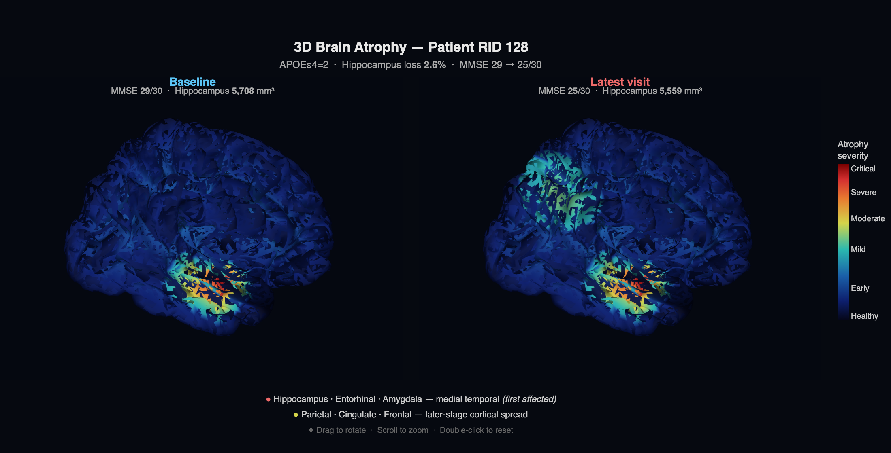
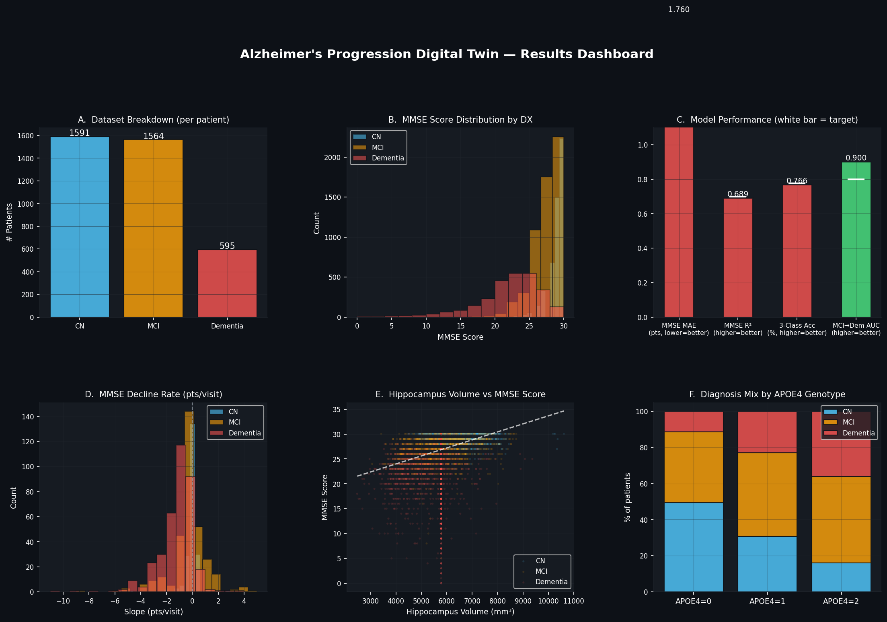
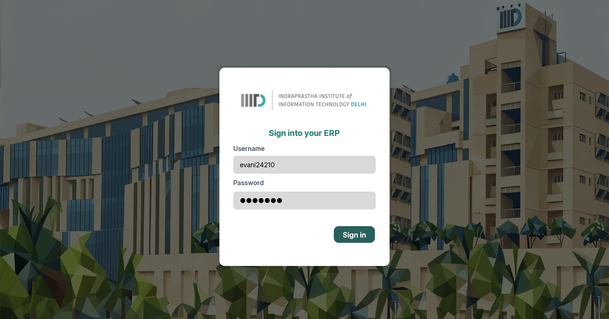

Projects
Work in computer science, bioinformatics, and software engineering.


Featured
Alzheimer's Progression Digital Twin
ML system predicting cognitive decline and brain atrophy from 14,315 longitudinal ADNI records. Bidirectional Attention-LSTM (MMSE MAE 1.76), XGBoost MCI→Dementia AUC 0.90. Interactive Dash app with Monte Carlo simulation.
Google Classroom Downloader
Production-grade OAuth-verified FastAPI web app enabling bulk-download of Google Classroom materials. Deployed on Cloud Run. Serves 2,000+ students. ☆ 21 GitHub stars.
Terrarium: Plant Journal & Marketplace
Full-stack database-driven app in MySQL, Flask, and Node.js for plant care tracking, marketplace purchases, and vacation-care booking. SQL triggers for automated stock validation across 7 relational entities.

University ERP System
Full-stack Java/SQL application streamlining academic workflows for 500+ simulated users. Secure authentication with salting/hashing. ☆ 1 star.
Secondary Protein Structure Predictor
Web-based bioinformatic tool predicting α-helix and β-strand regions via the Chou-Fasman method. Validated against 20+ known PDB structures.